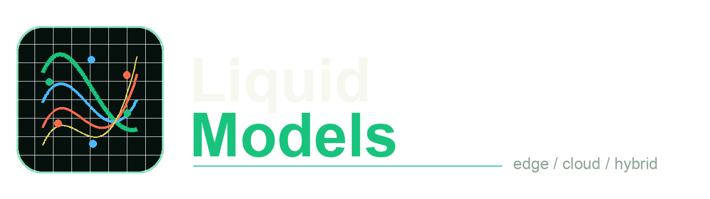
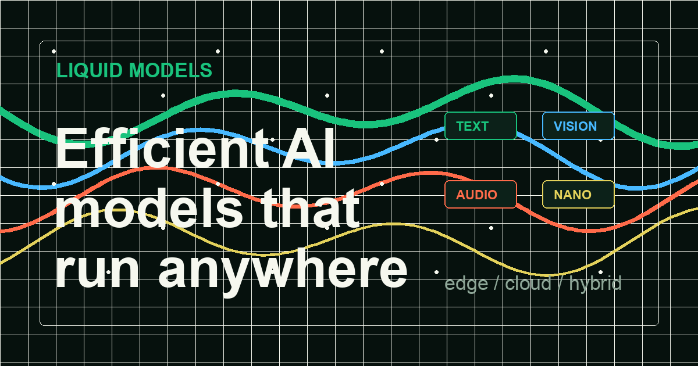

Device aware
Designed for smartphones, laptops, vehicles, robotics, and other environments where latency, memory, and privacy matter.

Independent guide to Liquid Foundation Models
Track the Liquid model landscape across LFM2, LFM2.5, text, vision-language, audio, and nano models built for edge, cloud, and hybrid deployment.
Reference snapshot based on Liquid AI public model information. This site is independent and not affiliated with Liquid AI.

What the keyword means
Liquid AI describes LFMs as hybrid models rooted in dynamical systems and signal processing. For builders, the important idea is simpler: capable models that can be customized and deployed close to the work.
Designed for smartphones, laptops, vehicles, robotics, and other environments where latency, memory, and privacy matter.
Model families cover text, image-text workflows, audio conversations, and specialized task models.
LFMs are positioned for fine-tuning, task specialization, extraction, RAG, tool use, and enterprise deployment needs.
The same model strategy can span on-device inference, cloud scale, and private hybrid systems.
Model map
Use the filters to focus the map, then verify availability and licensing through official Liquid AI channels.
Showing 4 model groups
General language models for instruction following, retrieval workflows, extraction, and agentic tasks.
Models that combine image and text understanding for low-latency visual intelligence and device-aware deployment.
End-to-end audio and text generation for responsive voice interactions with a compact foundation model footprint.
Tiny customized models for targeted jobs such as extraction, RAG, math, translation, PII workflows, and tool use.
Deployment pattern
Best for private data, offline resilience, low round-trip latency, and local hardware control.
Best for centralized orchestration, elastic workloads, managed access, and shared inference services.
Best when sensitive work stays local while larger workflows coordinate with cloud services.
Benchmark snapshot
These figures summarize the public LFM2 benchmark table from Liquid AI. Always check the official page before making buying or architecture decisions.
| Benchmark | LFM2-350M | LFM2-700M | LFM2-1.2B |
|---|---|---|---|
| MMLU | 43.43 | 49.90 | 55.23 |
| GPQA | 27.46 | 28.48 | 31.47 |
| IFEval | 65.12 | 72.23 | 74.89 |
| GSM8K | 30.10 | 46.40 | 58.30 |
| MMMLU | 37.99 | 43.28 | 46.73 |
Build with LFMs
FAQ
In current AI search usage, Liquid models usually means Liquid AI's Liquid Foundation Models: efficient model families spanning text, vision-language, audio, and task-specific nano models.
LFM2 is the core family; LFM2.5 extends that line with newer text, vision-language, and audio models. Confirm exact availability through Liquid AI's official model page.
Liquid AI positions LFMs for CPU, GPU, and NPU deployment across on-device, cloud, and hybrid environments, depending on the model and licensing path.
No. Liquid Models is an independent educational resource. Product details, benchmarks, access terms, and licensing should be verified with Liquid AI.